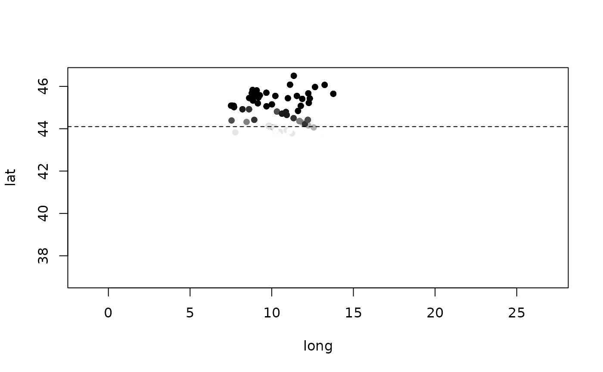

Degemination (gatto pronounced with a single t) in the speech of 4 speakers at each of 145 towns in mainland Italy and Sicily, with coordinates for mapping. Northern dialects degeminate, central and southern ones keep geminates, with a sharp transition along a stylised La Spezia-Rimini line at about 44.1° N. Older speakers degeminate more. Each speaker reads 10 words with a geminate.
Format
A tibble with 580 rows and 7 columns:
- town
Town name.
- lat, long
Coordinates of the town in decimal degrees.
- speaker
Speaker ID,
town_1totown_4.- age
Age in years.
- words
Words read with a geminate: always 10.
- degeminated
Of these, words produced with a single consonant.
Details
True model:
with by-town intercepts t0 (SD 0.6). Town names and
coordinates are the Italian towns of over 50,000 inhabitants in
maps::world.cities (without Sardinia). Northern dialects have no
consonant length contrast, and geminates are less prominent in the
Italian of northern speakers than in central and southern varieties
(Bertinetto and Loporcaro 2005). In read Italian the regional
difference is small (Mairano and De Iacovo 2020), so the dataset
describes dialect speech. The sharp line, the age effect and all data
are simulated.
References
Bertinetto, P. M. & Loporcaro, M. (2005). The sound pattern of Standard Italian, as compared with the varieties spoken in Florence, Milan and Rome. Journal of the International Phonetic Association, 35(2), 131-151. doi:10.1017/S0025100305002148
Mairano, P. & De Iacovo, V. (2020). Gemination in Northern versus Central and Southern varieties of Italian: A corpus-based investigation. Language and Speech, 63(3), 608-634. doi:10.1177/0023830919875481
Examples
dialect_survey$p <- dialect_survey$degeminated / dialect_survey$words
plot(lat ~ long, data = dialect_survey, col = grey(1 - p), pch = 16, asp = 1.3)
abline(h = 44.1, lty = 2)

if (requireNamespace("lme4", quietly = TRUE)) {
m <- lme4::glmer(cbind(degeminated, words - degeminated) ~ I(lat - 44.1) + I(age - 50) +
(1 | town), data = dialect_survey, family = binomial)
lme4::fixef(m)
}
#> (Intercept) I(lat - 44.1) I(age - 50)
#> -1.46171334 6.43810397 0.02378499